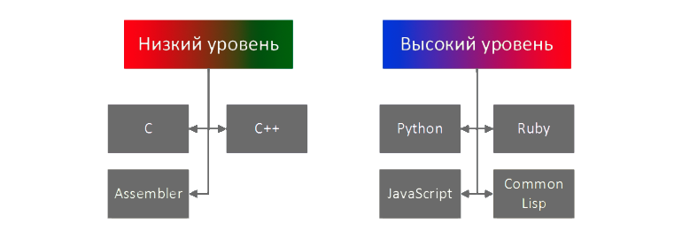
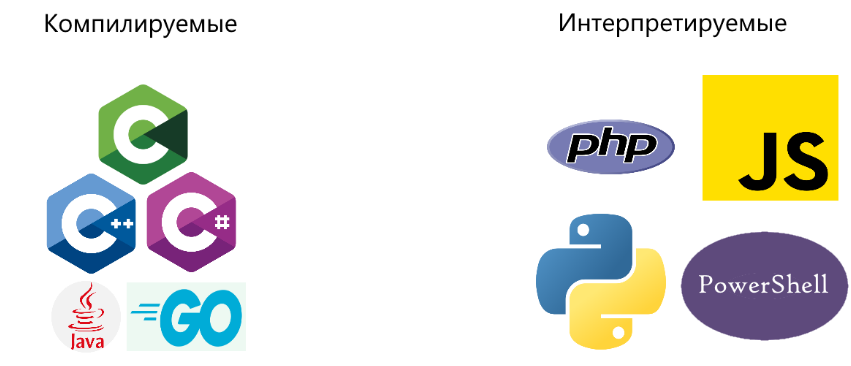
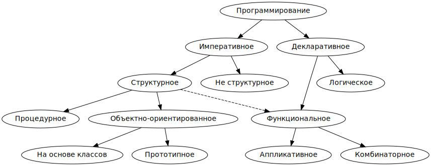

Содержание урока
Введение
Изучение языков программирования – это ключевой этап в формировании компетенций в области информационных технологий. Языки программирования являются основным инструментом для создания программного обеспечения, а их разнообразие и специфика позволяют программистам выбирать наиболее подходящий инструмент для решения конкретных задач. Языки программирования классифицируют по разным параметрам.

Видео-урок
Классификация по уровню языка
Классификация по уровню языка программирования означает то, насколько язык близок к командам для апаратной части компьютера или к абстракциям, более понятным человеку. Языки делят на низкоуровневые и высокоуровневые. Низкоуровневые языки программирования имеет малый уровень абстракции и более близки к командам компьютера, поэтому человеку программровать на таких языках сложнее, но ПО получается более оптимизированное и быстрое. высокоуровневые языки имеют высокий уровень абстракции и поэтому более удобны для человека, но чтобы программу на таком языке понял компьютер, необходимо компилировать или интерпретировать язык в ассемблер и далее в двоичный код. Иногда ход преобразования исходного кода в бинарный код более сложный из-за наличия виртуальной машины и байт-кода.
Более подробно об уровнях:
1.Машинный язык: Это самый низкоуровневый язык программирования, понятный компьютеру напрямую. Он состоит из бинарных кодов и инструкций, понятных только процессору. Примеры включают языки ассемблера.
2.Ассемблер: Этот уровень представляет собой более человеко-читаемое представление машинного кода, использующее текстовые мнемоники для инструкций процессора. Примеры включают NASM (Netwide Assembler) и GAS (GNU Assembler).
3.Низкоуровневые языки: Это языки, которые предоставляют непосредственный доступ к аппаратным ресурсам компьютера и обладают более высоким уровнем абстракции, чем ассемблер. Примеры включают C и C++.
4.Среднеуровневые языки: Они предоставляют комбинацию высокоуровневых и низкоуровневых возможностей, обеспечивая баланс между удобством и производительностью. Примеры включают Rust и Go.
5.Высокоуровневые языки: Это языки программирования, которые предоставляют абстракции, скрывающие детали аппаратного обеспечения и позволяющие программистам сосредоточиться на решении задач более высокого уровня. Примеры включают Python, Java, и JavaScript.
Классификация по типу исполнения
Классификация языков программирования по типу исполнения кода разделяет их на несколько основных категорий. Вот некоторые из них:
1.Компилируемые языки программирования: В таких языках программный код преобразуется в машинный код с помощью компилятора перед выполнением программы. Примеры включают C, C++, и Rust.
2.Интерпретируемые языки программирования: В этом случае исходный код интерпретируется построчно в машинный код или промежуточный байт-код, который затем выполняется интерпретатором. Примеры включают Python, Ruby, и JavaScript.
3.Языки программирования с промежуточным исполнением: Такие языки используют виртуальные машины для выполнения программ. Исходный код обычно компилируется в промежуточный байт-код, который затем интерпретируется или компилируется в машинный код непосредственно перед выполнением. Примеры включают Java и C#.
Классификация по парадигме
Классификация языков программирования по парадигмам описывает основные методологии или подходы, которые языки предлагают для организации и структурирования программного кода. Вот основные парадигмы:
Процедурное программирование: Это основная парадигма, где программа состоит из последовательности инструкций, которые выполняются поочередно. Основной упор делается на процедуры или функции, которые могут быть вызваны из разных частей программы. Примеры включают C и Pascal.
Объектно-ориентированное программирование (ООП): Эта парадигма организует программу вокруг объектов, которые представляют собой экземпляры классов. Классы определяют данные (поля) и операции (методы) для работы с этими данными. Примеры включают Java, C++.
Функциональное программирование: В функциональном программировании основной упор делается на функции как основные строительные блоки программы. Функции в этом контексте рассматриваются как математические функции, которые принимают аргументы и возвращают результаты без побочных эффектов. Примеры включают Haskell, Lisp, и Scala.
Мультипарадигменное программирование: Некоторые языки поддерживают несколько парадигм программирования, позволяя программистам выбирать подход, который лучше всего подходит для конкретной задачи. Примером является Python, который поддерживает процедурное, объектно-ориентированное и функциональное программирование.
Тест
Как выбирается язык программирования?
Какие языки программрования позволяю писать наиболее быстрое ПО?
Java это...
К Мультипарадигменным языкам программирования отноститься -
Если код программы преобразуется в бинарный код построчно в момент запуска то это...